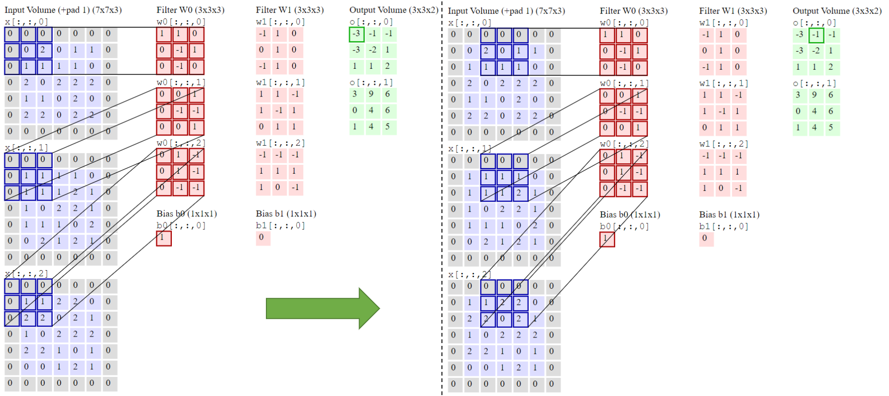
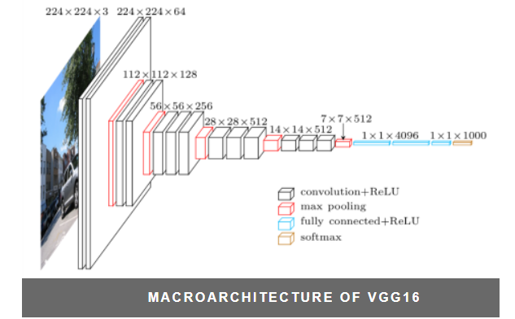
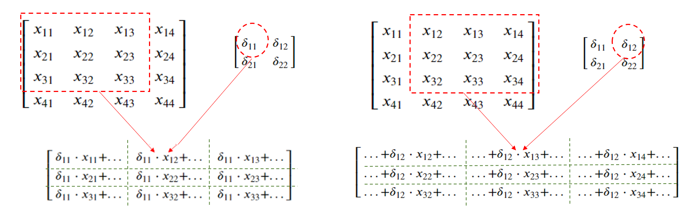
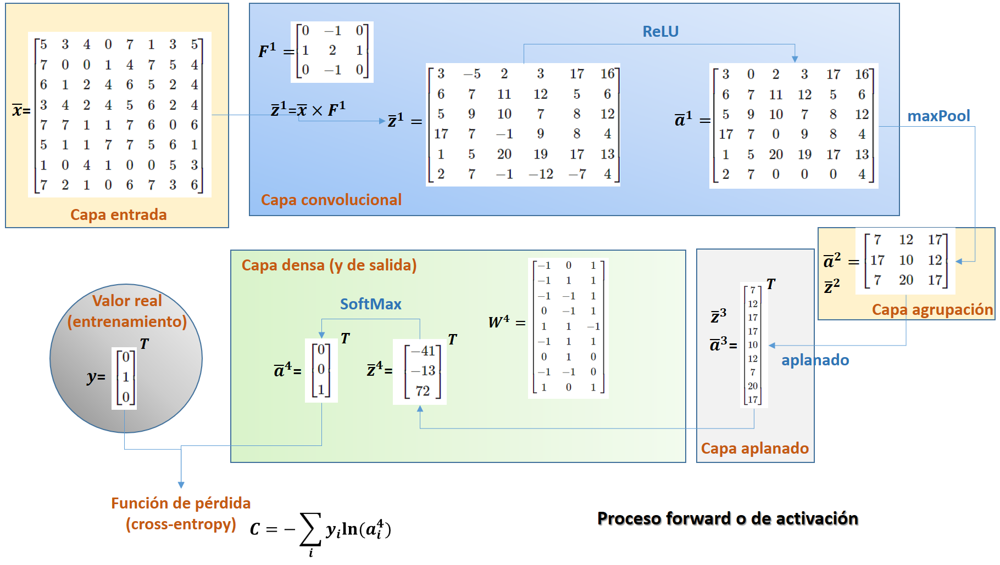
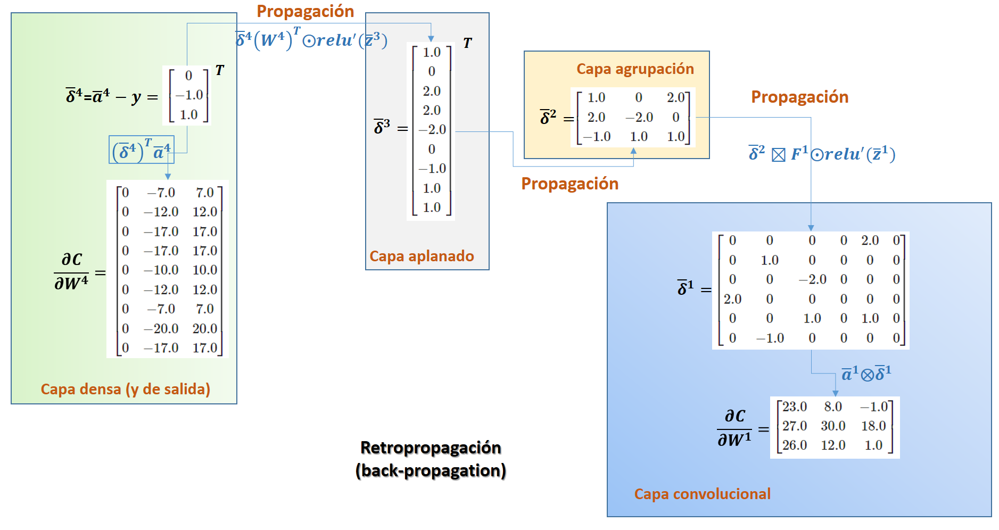

Redes convolucionales#
Introducción#
Las redes convolucionales ([LeCun et al., 1989]), también conocidas como redes neuronales convolucionales, (o convolutional neural networks CNN o ConvNet) , son un tipo especializado de red neuronal utilizadas para procesar datos con una topología en cuadrícula.
Las ConvNet se diseñaron para procesar imágenes y tratan de simular el funcionamiento de la visión humana. Restringen la arquitectura para usar un conjunto de pesos más reducido. Los datos de 1 imagen se estructuran en las ConvNet en 3 dimensiones: canal, ancho (\(\textbf{b}\)) y alto (\(\textbf{h}\)) de la imagen. Si a ellos se añaden un lote de varias imagenes se tiene una matriz de 4 dimensiones o tensor. En la entrada a la red una observación \(\bar{x}\) puede estar formada por 1 único canal en imagenes en gris, en 3 canales para los colores básicos RGB o incluso más si se incluye más información del espectro electromagnético. Pero en a fin de extraer patrones de la información, la red convoluciona hacia un mayor número de canales. En lugar de imágenes se hablará de mapas. Existirán tantos filtros como el producto \(c_i \cdot c_o\), siendo \(c_i\) y \(c_o\) los canales de entrada y salida a una capa convolucional respectivamente. La reducción de la complejidad viene dada por que la dimensión de cada filtro (\(f^2\)) es muy inferior a la conexión completa entre dos mapas: \((w \cdot h)^2\).
Una operación de convolución básica se aplica a una imagen bidimensional I, usando un kernel o filtro K bidimensional y que da como resultado una nueva imagen S:
Un ejemplo gráfico del proceso de convolución para una entrada con 3 canales y dimensión 5x5 \((W_1=5, H_1=5, D_1=3)\) al que se le aplica un filtro 3x3 con un salto de 2 y un relleno a cero de 1 obteniendo 2 canales de salida \((K=2, F=3, S=2, P=1)\) es
{kind=link}
Como se puede comprobar el elemento \(-3\) del primer mapa de salida se obtiene multiplicando uno a uno los elementos de cada filtro por los canales de entrada y sumando todos los productos más el valor del bias. Idem para el siguiente elemento \(-1\) una vez ejecutado el salto hacia la derecha en columnas. Una vez llegado hasta la última columna se ejecuta un salto en filas. El relleno a ceros (padding) permite al filtro barrer todo el mapa de entrada y obtener en salida un mapa de igual dimensión. El salto (strike) en el desplazamiento provoca una reducción en la dimensión del mapa de salida.
Tipos de Capa#
Una Arquitectura Convolucional tipo se compone de las capas: INPUT - CONV - RELU - POOL - FC.
INPUT contendrá los valores en píxeles de la imagen, en este caso una imagen de ancho \(\textbf{b}\), altura \(\textbf{h}\), y con tres canales de color R, G, B. El vector de datos de entrada va a ser un tensor o matriz de 4 dimensiones \(\textbf{(n, c, b, h)}\), donde \(\textbf{n}\) representará el número de observaciones en el lote tratado, \(\textbf{c}\) el número de canales, \(\textbf{b}\) es el ancho de la imagen y \(\textbf{h}\) es la altura de la imagen.
Los filtros que conectan los pixels localmente son compartidos y son aprendibles. Los parámetros entrenables del filtro de una capa \(\textbf{l}\) (\(W_l\)) tiene dimensiones \(\textbf{(co, ci, f, f)}\), donde \(\textbf{co}\) es el número de canales de salida (los canales del tensor \(Z_l\)), \(\textbf{ci}\) es el número de canales de entrada (los canales del tensor \(A_{l-1}\)) y \(\textbf{f}\) es el tamaño del filtro. Además se incluye un parámetro de bias \(B_l\), que es un vector de dimensiones \(\textbf{co}\).
La capa RELU aplicará una función de activación por elementos, como el umbral \((max(0,x))\) en cero. Esto deja el tamaño del tensor de esta capa sin cambios \(\textbf{(n, c, b, h)}\).
La capa POOL realizará una operación de downsampling a lo largo de las dimensiones espaciales \(\textbf{(b,h)}\), lo que dará como resultado un volumen \(\textbf{(n, c, b*, h*)}\), siendo \(\textbf{(b*, h*)}\) inferiores a \(\textbf{(b, h)}\). Esta capa no utiliza pesos aprendibles.
La capa FC o densa (es decir, totalmente conectada) calculará los puntajes de clase. Las capas densas tienen una matriz entrenable \(W_l\) de dos dimensiones \(\textbf{(p,m)}\), siendo \(\textbf{m}\) el nº de carácteristicas de la salida de la capa (el vector \(X_l\)) y \(\textbf{p}\) el número de características de la entrada a la capa (el vector \(A_{l-1}\))
Reglas generales para modelar una red convolucional#
La capa de entrada (que contiene la imagen) debe ser divisible por \(2^n\). Los números comunes incluyen \(32\) (por ejemplo, CIFAR-10), \(64\), \(96\) (por ejemplo, STL-10) o \(224\) (por ejemplo, ImageNet), \(384\) y \(512\).
Las capas conv deben usar filtros pequeños (por ejemplo, \(3\times3\) o como máximo \(5\times5\)), usar un salto de \(S = 1\) y, lo que es más importante, rellenar el volumen de entrada con ceros (padding) de tal manera que la capa conv no altere las dimensiones espaciales de la entrada (si \(F = 3\), \(P = 1\); si \(F = 5\), \(P=2\); en general \(P = (F - 1)/2\)).
Las capas de pool se encargan de reducir el muestreo de las dimensiones espaciales de la entrada. La configuración más común es usar max-pooling con campos receptivos \(2\times2\) (es decir, \(F = 2\)), y un salto de \(2\) (\(S = 2\)); esto es, se descarta exactamente el \(75%\). Más infrecuente, por la dificultad de encajarlo en la dimensión de la entrada es el uso de \(F = 3\) y \(S = 2\). Dimensiones de maxpooling superiores son muy infrecuentes ya que es muy agresiva y deficitaria y conduce a peores rendimentos.
Arquitecturas destacadas#
Hay varias arquitecturas en el campo de las Redes Convolucionales que tienen un nombre. Los más comunes son:
LeNet. Las primeras aplicaciones exitosas de redes convolucionales fueron desarrolladas por [LeCun et al., 1998] en la década de 1990. De estos, el más conocido es la arquitectura LeNet que se utilizaba para leer códigos postales, dígitos, etc.
AlexNet. El primer trabajo que popularizó las redes convolucionales en visión artificial fue el AlexNet, desarrollado por [Krizhevsky et al., 2012] (2012). AlexNet se presentó al desafío ImageNet ILSVRC en 2012 y superó significativamente al segundo finalista (error top 5 del 16% en comparación con el subcampeón con un error del 26%). La red tenía una arquitectura muy similar a LeNet, pero era más profunda, más grande y presentaba capas convolucionales apiladas una encima de la otra (anteriormente era común tener una sola capa CONV siempre seguida inmediatamente por una capa POOL).
ZF Neto. El ganador de ILSVRC 2013 fue una Red Convolucional de Matthew Zeiler y Rob Fergus. Se hizo conocido como ZFNet (abreviatura de Zeiler & Fergus Net). Fue una mejora en AlexNet al ajustar los hiperparámetros de la arquitectura, en particular al expandir el tamaño de las capas convolucionales medias y hacer que el paso y el tamaño del filtro en la primera capa sean más pequeños.
GoogLeNet. El ganador de ILSVRC 2014 fue una red convolucional de [Szegedy et al., 2014] de Google. Su principal contribución fue el desarrollo de un Módulo de Inicio que redujo drásticamente el número de parámetros en la red (4M, en comparación con AlexNet con 60M). Además, este documento utiliza Average Pooling en lugar de capas totalmente conectadas en la parte superior de ConvNet, eliminando una gran cantidad de parámetros que no parecen importar mucho. También hay varias versiones de seguimiento de GoogLeNet, la más reciente Inception-v4.
VGGNet. El subcampeón en ILSVRC 2014 fue la red de Karen Simonyan y Andrew Zisserman que se conoció como VGGNet. Su principal contribución fue mostrar que la profundidad de la red es un componente crítico para un buen rendimiento. Su mejor red final contiene 16 capas CONV / FC y, atractivamente, presenta una arquitectura extremadamente homogénea que solo realiza circunvoluciones 3x3 y agrupación 2x2 desde el principio hasta el final. Su modelo preentrenado está disponible para uso plug and play en Caffe. Una desventaja de VGGNet es que es más caro de evaluar y utiliza mucha más memoria y parámetros (140M). La mayoría de estos parámetros se encuentran en la primera capa totalmente conectada, y desde entonces se descubrió que estas capas FC se pueden eliminar sin degradar el rendimiento, lo que reduce significativamente el número de parámetros necesarios.
ResNet. Residual Network desarrollado por [Kaiming et al., 2015] fue el ganador de ILSVRC 2015. Cuenta con conexiones de salto especiales y un uso intensivo de la normalización por lotes. A la arquitectura también le faltan capas totalmente conectadas al final de la red. ResNets son actualmente modelos de red neuronal convolucional de última generación y son la opción predeterminada para usar ConvNets en la práctica (a partir del 10 de mayo de 2016).
Esquema de la arquitectura VGGNet#
El modelo logra una precisión de prueba del 92,7 % entre los cinco primeros en ImageNet, que es un conjunto de datos de más de 14 millones de imágenes pertenecientes a 1000 clases. Dentro del modelo VGGNet se implementa la arquitectura VGG16:
{kind=link}
Redes Residuales Profundas#
Las Redes Residuales Profundas (ResNets) consisten en muchas “Unidades Residuales” apiladas. Cada unidad (ver la siguiente figura) puede expresarse de forma general:
{kind=link}
Dónde \(x_l\) y \(x_{l+1}\) son entradas y salidas de la unidad \(l\)-ésima, \(F\) es una función residual, \(h(x_l)=x_l\) es un mapeo de identidad y \(f\) es la función ReLU.
Para un mayor detalle y por ejemplo profundizar en la retropropagación de las ResNets consultar el capitulo de Kaiming:
https://link.springer.com/chapter/10.1007/978-3-319-46493-0_38
Ver también: https://pytorch.org/hub/pytorch_vision_resnet/
Entrenamiento#
En cada capa de la red convolucional tendrá lugar, según tipología, un proceso de filtro convolucional, agrupación o ponderación lineal seguido de una activación. Todo ello constituye el paso adelante o proceso forward de la red. Para una red ya entrenada, el proceso forward permite obtener las predicciones.
El entrenamiento de la red requiere un proceso de retropropagación (backpropagation). Las capas finales que tienen que clasificar los patrones que han extraido las capas convolucionales son capas densas, como el perceptron o completamente conectadas (“full connected”). Puede haber 2 o 3 capas densas y en ellas el cálculo de los gradientes delta y el ajuste de las matrices W se realiza tal cual se ha comentado en el perceptron.
El bloque de capas densas, acabará propagando una matriz \(\Delta\) que permitirá entrenar las capas previas. Dependiendo del tipo de capa el proceso de forma esquemática será así:
Capa de aplanado#
La capa de aplanado se situa al final del proceso de convolución y tiene por objeto cambiar la dimensión de los tensores para que los procesen las capas densas. La función forward tiene que convertir un tensor de dimensión \(\textbf{(n, c, b, h)}\) en bidimensional \(\textbf{(n, c . b . h)=(n, m)}\) para conectar con el bloque de capas densas. Por tanto la retropropagación recibirá una matriz \(\Delta_{n,m}^l\) bidimensional y tiene que recolocarla a tamaño \(\Delta_{n,c,b,h}^{l-1}\). Estás capas no tienen configuración dinámica y no tiene que ajustar ninguna matriz \(\textbf{W}\).
Capa de Agrupación#
Las capas de agrupación (maxpooling) tienen también una configuración estática, el parámetro \(\textbf{p}\) de reducción de escala y la regla de agrupación, no hay matriz \(W\) entrenable. En la retropropagación sólo hay que progragar la matriz \(\Delta^l\) recibida para obtener la matriz \(\Delta^{l-1}\). El tamaño de \(\Delta^{l-1}\) se incrementará según la inversa de la escala \(\textbf{p}\) y la obtención de los \(\delta_{ij}^{l-1}\) a partir de \(\delta_{ij}^l\) seguirá una regla inversa. Por ejemplo si \(p=2\) y se tiene agrupación por máximo, se repetirá cada valor \(\delta_{ij}^l\) en una región \(2\times2\) de \(\Delta^{l-1}\).
Capa de convolución#
Entrenamiento: conocidas las matrices \(A^{l-1}\) y \(\Delta^l\) y considerando las dimensiones del filtro convolucional \(W^l\) hay que moverse por \(A^{l-1}\) multiplicando sus regiones por cada uno de los escalares \(\delta^l_{ij}\). El resultado es una matriz (\(\frac{\partial{C}}{\partial{W^l}}\)), de la misma dimensión que \(W^l\) a la que se acumula para optimizarla:
La obtención de \(\frac{\partial{C}}{\partial{W^l}}\) es como se muestra en el siguiente gráfico (donde se supone \(W^l\) un filtro \(3\times 3\), \(A^{l-1} = [x_{ij}]\) con dimensión \(4\times 4\) y \(\Delta^l\) es dimensión \(2\times 2\)):
{kind=link}
Nueva propagación: para obtener \(\Delta^{l-1}\) desde \(W^l\) y \(\Delta^l\), aplicando lo que se denomina una convolución traspuesta. El filtro \(W^l\) se combina sobre cada \(\delta^l_{ij}\) para obtener la matriz \(\Delta^{l-1}\) de la forma en que se explica en el siguiente gráfico:

Y continuaría así:

La convolución traspuesta existe como método en la arquitectura pytorch y además de ejecutarse internamente en el proceso de entrenamiento, se usa para modelos más avanzados como forma de trasladar tensores de una escala inferior a una superior dentro del proceso forward.
https://pytorch.org/docs/stable/generated/torch.nn.ConvTranspose2d.html
Note
El gradiente delta se propaga en una capa convolucional usando un filtro convolucional transpuesto.
Observaciones: En el cuaderno Maqueta de red neuronal convolucional se realiza una justificación de las anteriores operaciones convolucionales en un caso particular; sin padding ni strike, pero que resulta suficientemente general.
Función de pérdida y optimizador#
Función de pérdida o coste#
La función de pérdida más habitual es la entropia cruzada que va asociada con el uso de la función de activación softmax en la última capa.
La función softmax a partir del vector ponderación lineal \(\bar{z}\) obtiene una activación a un vector probabilidad \(\bar{p}\) con:
Y la función de pérdida cross_entropy entre \(\bar{p}\) y el valor real de entrenamiento \(\bar{y}\)
Tiene la ventaja que en combinación con softmax da un valor del gradiente delta muy simple para la última capa (\(L\)):
Optimizador#
El Optimizador hace referencia en la manera en que se ajusta la configuración (pesos, filtros, bias) para minimizar la función de pérdida de la red.
En el gradiente descenso se aplican los gradientes usando un ratio de entrenamiento \(\eta\).
El gradiente descenso estocástico muestrea observaciones en un conjunto de entrenamiento de gran dimensión.
El optimizador Adam aplica una tasa de entrenamiento variable que se adapta automáticamente en las distintas capas de la arquitectura.
Ejemplo#
Se supone una red convolucional mínima que procesa una observación \(\bar{x}\) que es una imagen con un sólo canal \(8 \times 8\). Tiene una capa de convolución con un filtro \(F^1\) de dimensión \(3\times3\) sin padding y con stride \(1\), por tanto la salida \(\bar{a}^1\) es \(6 \times 6\). Le sigue una capa de agrupación que obtiene \(\bar{a}^2\) con una dimensión \(3 \times 3\). La salida de la agrupación se aplana en \(\bar{a}^3\), resultando un vector de dimensión \(9\). La última capa es densa acabando en una capa de salida de dimensión \(3\), obteniendose \(\bar{a}^4\). Se usa activación ReLU en todas las capas, excepto en la capa final donde se usa softMax y como función de pérdida la entropia cruzada.
Un esquema con un ejemplo de la activación de una observación es:
{kind=link}
Y un esquema de la retropagación y entrenamiento de la red para una época de la observación es:
{kind=link}